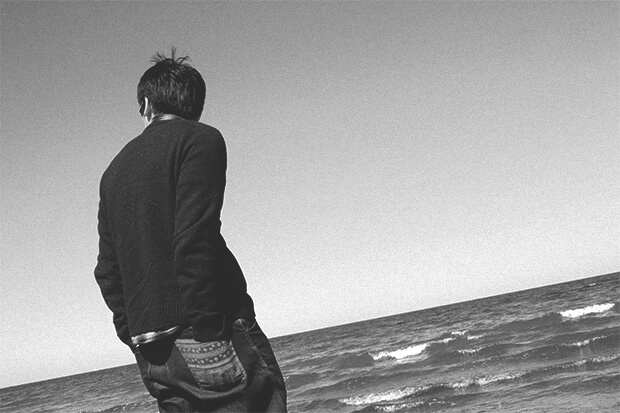

关于我 About Me
毕业于上海大学数码艺术学院，曾担任UI设计师一职。在app、web领域有较多经验，同时涉及平面、印刷、插画、H5、动画、CSS等方面，有较强的产品理念。

曾经的我也想成为一名漫画家（为什么会用也(⊙_⊙)?），如今梦想依旧，但我的路却更广。漫画家会用自己的表现手法让人们听他的故事、寻求共鸣；艺术家表达自己所感所想、不断追求创新；而设计师则是考虑如何更优雅更完美地解决问题、达成目的。我相信任何一个带主观性的创造活动其过程都会有所“设计”，但同样都是创造活动，唯有设计师是为了服务而去创造，且服务的对象也远不止人类。
小时候憧憬骚人墨客的清淡超然，想象着“采菊东篱下，悠然见南山”的美好生活，之后了解小隐于野、中隐于市、大隐于朝的境界，直到最后发现隐于野是为逃避，隐于市是为中庸，隐于朝是为大患。古代文人多为失意时隐，多为不得已而隐之，但我却依然对其有所向往，大概因为他们的那份清淡风气、逍遥自适不论在古今社会，特别处在现在信息爆炸、快节奏的时代都是很难坚持的生活态度。现在或许极少有人能成为真正的“隐士”，但保持独立人格、追求思想自由、不委曲求全、不趋炎附势，是我想要拥有的隐逸之心。
- 有得有失，有失有得
- 穷则独善其身，达则兼济天下
- 一个活在过去并穿越到未来的人